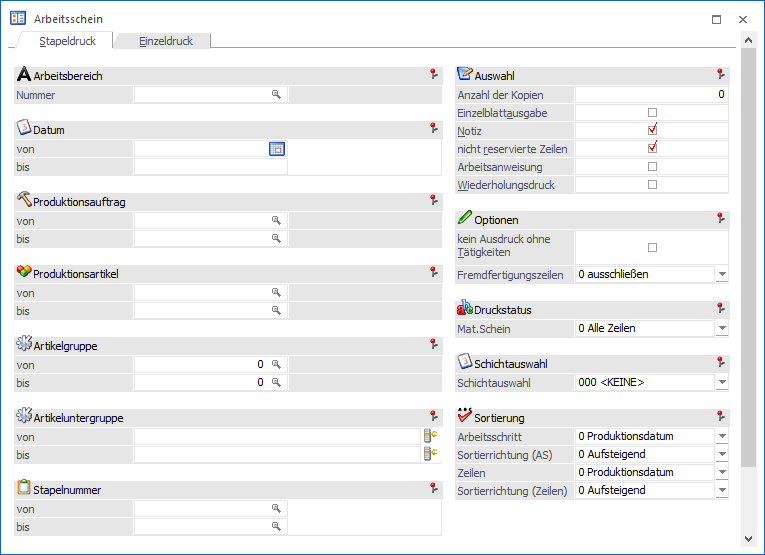
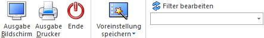

In einem Arbeitsschein wird aufgelistet, welche Artikel (Komponenten) und Ressourcen für einen Arbeitsschritt benötigt werden und wie die Arbeiten durchzuführen sind.
In einem Arbeitsschein wird grundsätzlich aufgelistet, welche Artikel (Komponenten) und Ressourcen "wann" für einen Arbeitsschritt benötigt werden. Die Ausgabe kann neben dem Menüpunkt
1 WinLine PPS
1 Produktion
1 Arbeitsschein
auch direkt über den Leitstand (Button "Arbeitsschein" bzw. "alle Arbeitsscheine") initiiert werden.
Achtung
Je nach Einstellungen in den PPS-Parametern kann ein Arbeitsschein die Voraussetzung für einen Materialentnahmeschein bzw. die Endmeldung sein:
ü Arbeitsschein als
Voraussetzung
Ob vor dem Druck des Materialentnahmescheins bzw. vor der
Endmeldung eines Produktionsauftrags bereits ein Arbeitsschein erzeugt sein
muss, kann in den PPS-Parametern (Bereich "Ausgabe") über die Option
"Arbeitsschein" definiert werden.

Das Fenster untergliedert sich in die folgenden Register, welche in den nachfolgenden Kapiteln detailliert beschrieben werden:
ü Register "Stapeldruck"
In diesem
Register können Arbeitsscheine für noch nicht abgeschlossene Produktionsaufträge
gedruckt werden. Es werden dabei immer alle offenen Arbeitsschritte eines
Auftrags berücksichtigt.
ü Register "Einzeldruck"
In dem
Register "Einzeldruck" kann ein Arbeitsschein für einen bestimmten
Arbeitsschritt eines Produktionsauftrags gedruckt werden.
Buttons

Ø Ausgabe Bildschirm
Durch Anwahl des Buttons "Ausgabe Bildschirm" bzw. der Taste F5 wird der Arbeitsschein gemäß der getätigten Selektion erstellt und am Bildschirm angezeigt.
Achtung
Durch eine Ausgabe des Arbeitsscheins am Bildschirm wird das Kennzeichen des getätigten Originaldrucks nicht gesetzt! Dieses erfolgt nur bei der Ausgabe auf den Drucker.
Ø Ausgabe Drucker
Bei Anwahl dieses Buttons wird der Arbeitsschein gemäß der getätigten Selektion erstellt und auf dem Drucker ausgegeben.
Achtung
Durch eine Ausgabe des Arbeitsscheins auf den Drucker wird das Kennzeichen des getätigten Originaldrucks gesetzt!
Ø Ende
Durch Anwahl des Buttons "Ende" bzw. der Taste ESC wird das Fenster geschlossen und keine Ausgabe durchgeführt.
Ø Voreinstellung speichern
Durch Anwahl dieses Buttons erfolgt eine benutzerspezifische Speicherung aller im Fenster getätigten Einstellungen. Diese sogenannten "Voreinstellungen" können jederzeit wieder abgerufen werden und ermöglichen dadurch ein schnelleres und zielorientierteres Arbeiten (nähere Informationen entnehmen Sie bitte dem Kapitel "Die Voreinstellungen").
Ø Filter bearbeiten
Durch Anklicken des Buttons "Filter bearbeiten" kann der Arbeitsschein nach frei definierbaren Kriterien eingeschränkt werden.